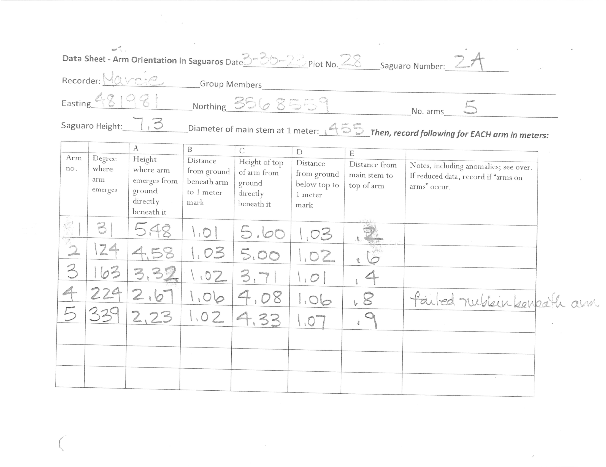
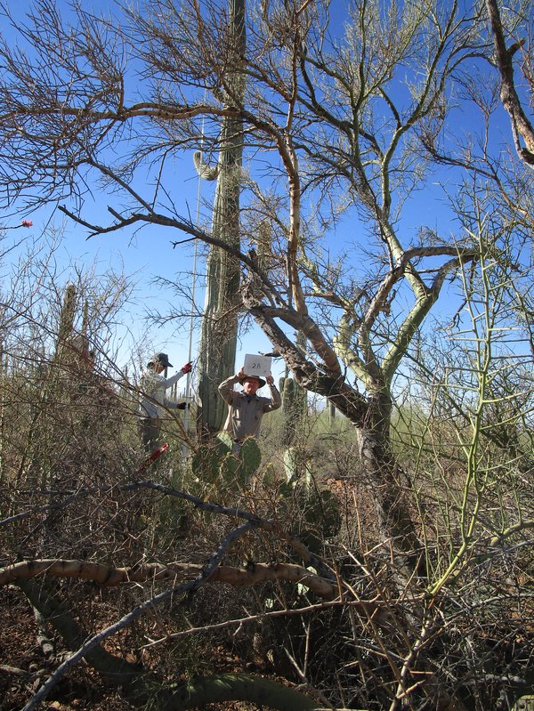
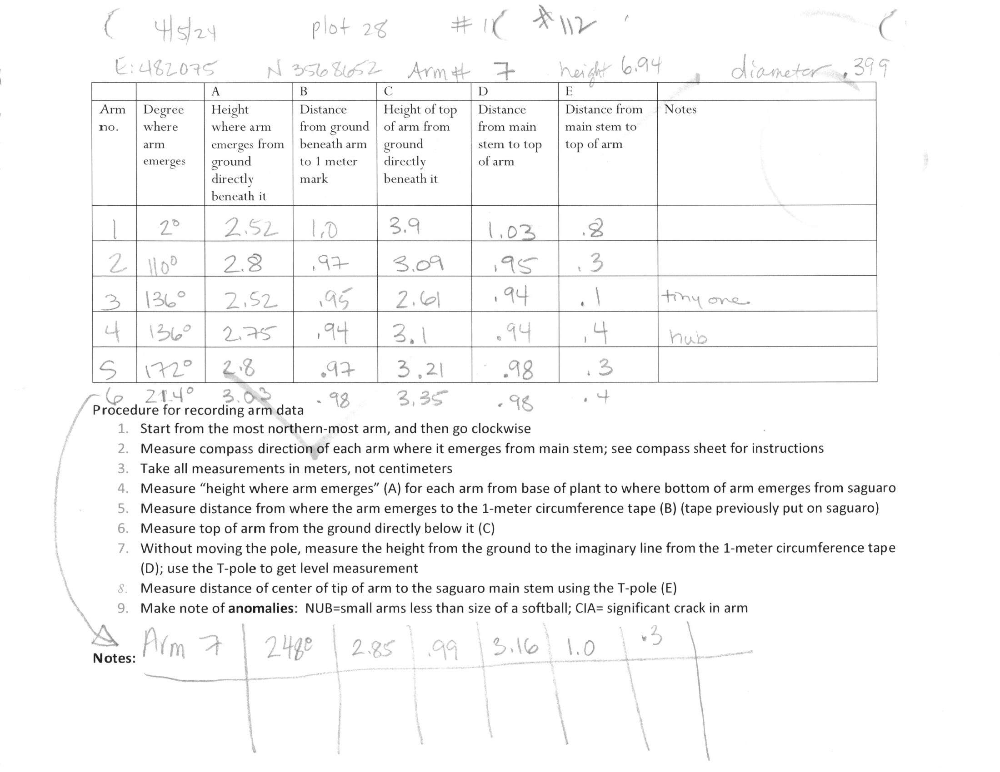
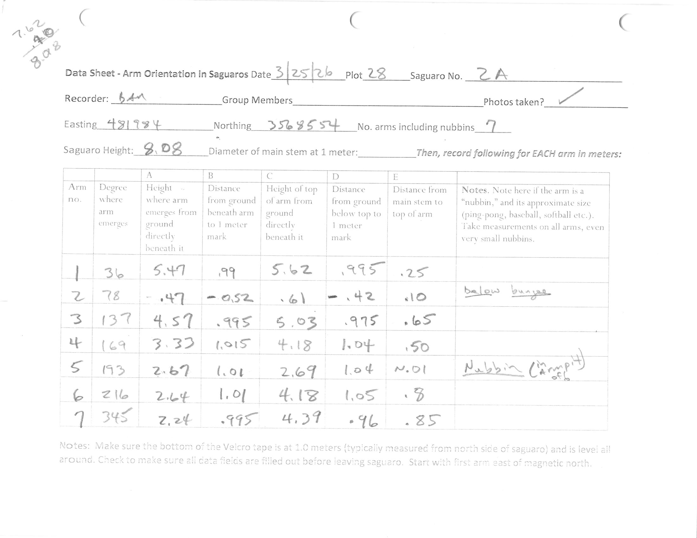

Introduction
CactusBench is built to assess the ability of frontier models to complete complex quality-assurance tasks with a very high precision bar on real scientific data collected by biologists at Saguaro National Park. These tasks involve complex visual reasoning, accurate OCR of messy handwriting, analyzing field photographs, and identifying mistakes and anomalies in the data, in order to carry out the work of a biologist maintaining the real cactus dataset. Results indicate that current frontier models lack the precision to carry out the tasks as accurately as human biologists and are not yet equipped to fully automate the quality-assurance task. The public benchmark is available as a Harbor-compatible repository here.
Get started
Contact phamswannty@gmail.com to fund benchmarking on an expanded private holdout set.
Leaderboard
46-task public benchmark set with default/low reasoning levels, native model harnesses; scoring is per-cell table accuracy with notes excluded. Each model received access to two anonymized data-sheet images and year-titled saguaro-cactus photos. Models ran three times per task in their native harnesses; see cross-harness analysis below.
Mean per-cell table accuracy across the 46-task public set (3 seeds per task; notes excluded). Frontier models ran on their native CLIs; the open models (Qwen, MiniMax) ran on the completion-loop harness. Error bars are 95% generalization confidence intervals (task-level bootstrap, n=46).
Overview
The saguaro cactus is an iconic cactus that serves as a keystone species in the Sonoran desert ecosystem. As such, it is studied by biologists at Saguaro National Park to understand the effects of climate change on life in the desert. As part of this effort, every few years, biologists and volunteers carefully collect field data on every saguaro arm within the same plot, measuring various size attributes including their direction on the saguaro, distance from the ground, height, etc. in order to build a dataset to measure saguaro growth and health over long time periods. Biologists then curate and maintain this dataset by looking across hand-written measurement forms and saguaro images in order to standardize the arm data, map measurements of the same saguaro arms between years, and identify anomalies and data-collection mistakes to create a clean dataset that can be analyzed.


This benchmark attempts to assess frontier multimodal models' abilities at doing this complex work by providing them the real raw datasheets and photos from a number of plots measured in 2023 and 2026 and seeing their capabilities at producing clean data.
Real scientific data and tasks
This benchmark uses real raw data collected in the field in the form of datasheets recording measurements and photos of the saguaros. Datasheets are often messy, ambiguous, and contain measurement errors, forcing the model to use the same reasoning and scrutiny beyond simple OCR. The tasks constructed match exactly what a real biologist had done to curate the dataset. Additionally, the ground truth has been carefully curated to identify ambiguous values to ensure models are held to a fair standard.
Cell-based scoring
Each task requires the model to produce a table containing measurements for each arm on the saguaro. There are eight total fields that record different measurements capturing each arm's size and positioning as well as additional notes that the field recorder wrote down with any helpful information. Scoring is based on per-cell accuracy, so a saguaro with five arms would be scored on accuracy across the 40 cells. For this leaderboard, note values were excluded from scoring as many notes were partially accurate and measurement-value accuracy holds greater importance to the biologists, but their accuracies were also noted.
Play the benchmark
Try it yourself — this is the same task the models were given: read the two years' field sheets and photos, then produce the cleaned cross-year arm table.
Methodology
Data Collection
Data was from two years, 2023 and 2026, of arm measurements across a number of randomly selected saguaro plots. Biologists and volunteers would walk through the plot, carefully measuring each saguaro's arms' features with long measuring sticks and compasses. They would then note the values of each measurement and record them on the printed sheets. Additionally, they would take photos of the saguaro from all four cardinal directions to capture all the arms.

A single task was assembled by taking the sheet photo and saguaro photos from each year for a single saguaro and placing them in directories the model being assessed could access. Saguaro photos had the year they were taken in the title while the sheets had anonymized file names and cleared metadata, as the year is written on the sheet and thus the model is expected to derive it.
Future work may involve creating a single task with all saguaros, as this would allow pattern recognition and long-horizon reasoning not expected in the current setup. For instance, a single field biologist recording a plot in 2026 had a compass which was off by 10°. The human scorer noticed this as they spotted 10° differences in the same direction between 2023 and 2026 data, leading them to correct all values for this scorer. The benchmark did not expect the model to deduce this, as seeing this pattern on a single saguaro would be within the standard variation and memory isn't carried over across tasks.
Quality Assurance
Significant work was put towards ensuring the benchmark was accurate, didn't give away extra information that exposed solutions, and was fair to the model given the information it was provided. One issue that came up was that many scorer sheets had hand-written notes made by the human data curator exposing their corrections and reasoning to the model. To hide these notes, manual redactions were applied to all sheets. To prevent models from using the redactions to understand that a value may be wrong or arms need to be reordered (and especially to prevent reward hacking on a training environment), realistic fake redactions were carefully applied to sheets which needed no corrections.

To ensure the benchmark reflects real-world performance, the ground truth was created by the domain expert who curated the dataset. It was carefully checked by a second human to ensure quality. All responses from all frontier models were carefully audited to ensure no scoring mistakes slipped through. All potential errors and cases where the ground truth was unclear or complex involved a discussion with the domain expert and careful deliberation about what would be fair to the model given the information available.
Handling Ambiguity
As alluded to, the task is quite complex and requires significant tacit knowledge to complete fully. The ambiguity of many decisions and values posed the largest challenge in constructing the benchmark. For instance, some measurements were inaccurate and required a guess on what was meant to be recorded. In the real world, the dataset curator would travel to the physical saguaro and re-measure to determine the actual value, something an LLM is unable to do. Given this, careful thought was put into each ambiguous decision and what would be reasonable scoring for each cell. The model was guided to output what it believed was accurate to the real world, not the sheet, and expected to reason based on that. Some models were indeed penalized for copying a value literally when reasoning and viewing saguaro photos indicated that the field biologist clearly made an error. However, in practice, models were given leniency on cases where the correct value was clearly ambiguous and many cells had multiple accepted answers to account for this.
Robustness
Cross-Harness Testing
Recent benchmark results have indicated that the harnesses used in assessment significantly impact model performance. As such, each model was tested on the simple completion-loop harness created for the tasks and its native harness over a three-task noise-floor slice, five seeds with each harness.
Mean per-cell accuracy on each frontier model's native CLI versus the custom completion loop on first-party APIs (Claude via Bedrock, GPT via OpenAI, Gemini via Google), over the three-task slice (n=15 per bar). Solid bar = native CLI; lighter bar = completion loop; whiskers are 95% confidence intervals.
The results indicate that for CactusBench tasks, frontier models are largely robust across harnesses: on first-party APIs, each model's completion-loop score lands within a few points of its native CLI, with Gemini 3.5 Flash the lone exception (dropping ~0.25). The open models tell the opposite story — they are sharply harness-dependent, performing substantially better on the completion loop than on their native Qwen Code CLI (MiniMax-M3 more than doubled, 0.33→0.85). One important caveat: routing the frontier models through OpenRouter rather than first-party APIs collapsed their scores by 0.3–0.6, so the completion loop itself is sound — the provider pathway is what matters. Given this, the production benchmark ran frontier models on their native CLIs and the open models on the completion loop, each on its stronger configuration.
Reasoning Level
Models were also tested at low versus high reasoning effort on their native harnesses, over the same three-task noise-floor slice with five seeds at each level.
Mean per-cell accuracy at low versus high reasoning effort on the native harness, over the three-task slice (n=15 per bar). Solid bar = low effort; lighter bar = high effort; whiskers are 95% confidence intervals. The intervals overlap heavily — the reasoning effect sits within the noise, and its sign is model-dependent.
Reasoning levels did not appear to have a significant impact on performance in these tasks. Point estimates moved by up to ~0.08 in either direction — the Anthropic models edged up with more effort while Gemini 3.1 Pro edged down — but every difference sits within the (wide) confidence intervals, below the noise threshold at this sample size.
Reproducibility
Every run — model, harness, provider route, reasoning level, and temperature — is recorded in the run manifest, with the full per-rollout trajectory, transcript, and config captured alongside.
Production benchmark — 46 tasks × 3 seeds
| Model | Harness | Provider route | Reasoning | Temperature |
|---|---|---|---|---|
| Gemini 3.1 Pro | Antigravity | Google (Antigravity) | low | default |
| Gemini 3.5 Flash | Antigravity | Google (Antigravity) | low | default |
| GPT-5.5 | Codex | OpenAI (Codex) | default | default |
| Claude Opus 4.8 | Claude Code | Anthropic (Claude Code) | default | default |
| Claude Opus 4.7 | Claude Code | Anthropic (Claude Code) | default | default |
| Qwen3-VL-Plus | Completion loop | OpenRouter — qwen3-vl-plus | n/a | 0.6 |
| MiniMax-M3 | Completion loop | OpenRouter — minimax/minimax-m3 | n/a | 0.6 |
Frontier models ran on their native CLIs at the vendor default reasoning level (Gemini at low effort, which it favors); the open models ran on the custom completion loop via OpenRouter at temperature 0.6. Native CLIs do not expose a temperature knob, so they used the vendor default.
Robustness studies — 3 noise-floor tasks × 5 seeds
| Model | Harness | Provider route | Reasoning | Temperature |
|---|---|---|---|---|
| Gemini 3.1 Pro | Antigravity / loop | Google · first-party · OpenRouter | low · high | default · 0.6 |
| Gemini 3.5 Flash | Antigravity / loop | Google · first-party · OpenRouter | low · high | default · 0.6 |
| GPT-5.5 | Codex / loop | OpenAI · first-party · OpenRouter | default · low · high | default · 0.6 |
| Claude Opus 4.8 | Claude Code / loop | Anthropic · Bedrock · OpenRouter | default · low · high | default · 0.6 |
| Claude Opus 4.7 | Claude Code / loop | Anthropic · Bedrock · OpenRouter | default · low · high | default · 0.6 |
| Qwen3-VL-Plus | Qwen Code / loop | OpenRouter | n/a | 0.6 |
| MiniMax-M3 | Qwen Code / loop | OpenRouter | n/a | 0.6 |
The cross-harness and reasoning studies swept each model across its native CLI and the completion loop, and (for the frontier models) across first-party and OpenRouter provider routes, over the same three-task slice. The cross-harness chart above uses the first-party route; the OpenRouter route is reported in-text.
Manifest: manifest.json
Results
Mean per-cell table accuracy across the 46-task public set. Frontier models lead in a tight band (0.93–0.97); the open models trail. Error bars are 95% generalization confidence intervals (task-level bootstrap, n=46).
Google's Gemini models appeared to perform the best across the public benchmark set. While the headline cell-accuracy numbers appear to be high, all models are actually far below the accuracy threshold to fully automate or provide value without significant human-in-the-loop checks. This is a task which requires very high precision, and the headline score actually masks model deficiencies. Specifically, besides simple OCR errors, models performed poorly at identifying anomalies and human errors and instead had a strong bias towards being faithful to the field scientists' measurements, even though the instructions specifically prompted them to have a more discerning eye and make changes to anomalous values.
Failure Analysis
Somewhat surprisingly, cell failures were dominated by OCR errors among frontier models. Qualitative analysis shows that even the best multimodal models still are substantially worse than humans at reading handwritten notes. Still, the frontier models were able to properly record most cells accurately. On the other hand, logical failures were made much more frequently with respect to the number of logic challenges presented in the tasks, sharing a small proportion of total errors due to relative sparsity in the task set.
Discussion
Multimodal models show increasing capabilities at visual reasoning tasks, but still lack the precision to carry out CactusBench autonomously at the level of a human biologist curating the dataset. Google's Gemini models and GPT-5.5 showed strong performance, with Anthropic's models trailing closely behind. Cross-harness and reasoning testing showed that while reasoning levels did not make an impact on performance, models performed substantially better in their native harnesses than a naive completion and tool-calling loop. This finding reinforces the need for cross-harness analysis when creating benchmarks.
Due to cost constraints, only a public 46-task subset was run. To fund a full assessment on a larger set, or hire me, contact phamswannty@gmail.com. Special thanks to volunteers and biologists at Saguaro National Park for the data.